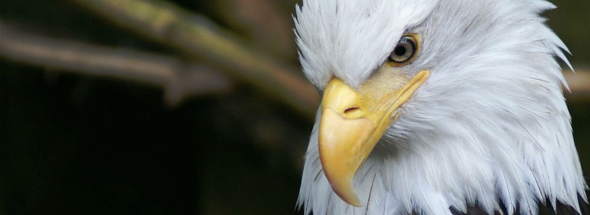

This slideshow uses a few amazing photos found on Flickr. You can find links to them below. This is only the example page. Head back to Build Internet for the full tutorial and explanation.


- 

This slideshow uses a few amazing photos found on Flickr. You can find links to them below. This is only the example page. Head back to Build Internet for the full tutorial and explanation.